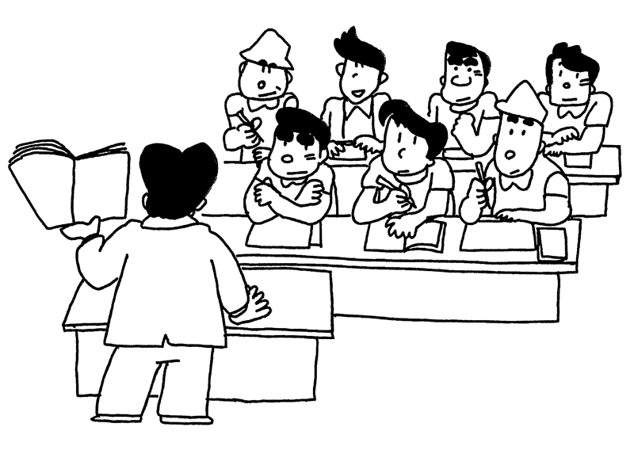

東日本ユニオン東京地本
JR東日本労働組合（略称・東日本ユニオン）東京地方本部です
コロナウイルス感染予防のために
出来る対策を徹底しましょう。
トピックス
最新の情報をお知らせします。
2021年2月10日 会議【中央委員会】NEW
本部は東京都千代田区において「第8回中央委員会」を開催し、2021春闘方針を決定しました。2021春闘要求は以下のとおりです。
- 定期昇給を実施すること。昇給係数は4係数とすること。
- 基本給ならびに初任給を、社員一律3,000円引き上げること。
- エルダー社員の基本給を、一律3,000円引き上げること。
- 第二基本給を廃止すること。
- 2021年度の賃金改定においては、賃金規定第23条の特別加給をおこなわないこと。
いよいよ2021春闘のスタートです。満額獲得にむけ力を合わせましょう！
2021年2月9日 提案【東京総合車セ】NEW
地本は東京支社より「2021年度東京総合車両センター業務量等について」と「東京総合車両センター施工科体制変更および業務委託拡大について」提案を受けました。
2021年2月2日 申し入れ【カフェテリア・プラン】NEW
本部は「カフェテリア・プランの取り扱いに関する申し入れ」を提出しました。
2021年2月1日 申し入れ【多様な働き方】NEW
本部は「社員の多様な働き方について」申し入れを提出しました。
2021年2月1日 情報【業務の新聞】NEW
「業務の新聞」第71号を発行しました。
2021年1月29日 申し入れ【ダイヤ改正】NEW
東京地本は2021年1月29日、東京支社に申第2号「2021年3月ダイヤ改正に関する申し入れ」を提出しました。
2021年1月19日 更新情報【業務の新聞blog版】
2021年1月8日 集会【分会代表者会議】
2月20日開催の「拡大分会代表者会議」について、最近の新型コロナウイルス感染の拡大と政府の緊急事態宣言の発出を受けて以下の通り変更します。
- 開催日は変更なく、2月20日（土）です。
- 密を避けるために開催を午前、午後の2回に分けて、参加分会を指定して開催します。
- 詳しくは、この下の「お知らせ」コーナーをご覧ください。
お知らせ
2021年新春の集いについて
新型コロナウイルス感染第3波をむかえ、感染者が増加しています。東京地本は組合員の健康を第一に考え、「2021年新春の集い」の開催見合わせを決定しました。組合員の皆さんのご理解をお願いします。
拡大分会代表者会議

新型コロナウイルスの感染拡大と緊急事態宣言の発出を受けて、開催を以下のとおり変更します。
- 開催を午前・午後の2回に分けて、参加分会を指定して行います。
- 短時間で集中した議論とするために、事前に分会代表者宛に資料を送付します。
- なお、感染状況によっては中止を含めて再度の変更がありうることをご了承下さい。
- 日 時
- 2021年2月20日（土）
- 場 所
- 南部労政会館
- 参 加
- 以下のとおり指定します。
- 午前
- 11時〜12時
東京地区駅連合分会、新宿地区駅連合分会、運転区連合分会、エルダー協議会 - 午後
- 13時〜14時
山手車掌区連合分会、松戸車掌区連合分会、東京総合車両センター分会、建築技術センター分会 - 議 題
- 春のたたかいについて、その他
- その他
- 不明な点は地本まで問い合わせてください。

{kind=link}
{kind=link}
{kind=link}
{kind=link}
{kind=link}
{kind=link}